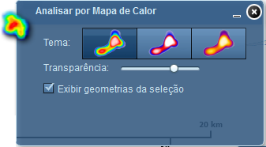

Analisar por Mapa de Calor
A ferramenta Analisar por Mapa de Calor cria uma representação gráfica com a opção de três temas possíveis a serem representados, que permitem analisar a densidade das geometrias em determinadas áreas do mapa, ajustando seu nível de transparência para representação aplicada, e opção de exibir ou não as geometrias selecionadas.

Ao abrir a ferramenta Analisar por Mapa de Calor, será aplicada a representação gráfica automaticamente com o tema "arco-íris".
Tema: define representação gráfica aplicada ao mapa;
Transparência: nível de transparência da mancha de calor;
Exibir geometrias da seleção: opção para exibir ou não as geometrias juntamente com a mancha de calor;
Fechar: fecha janela Analisar por Mapa de Calor;
Minimizar: minimiza janela Analisar por Mapa de Calor.